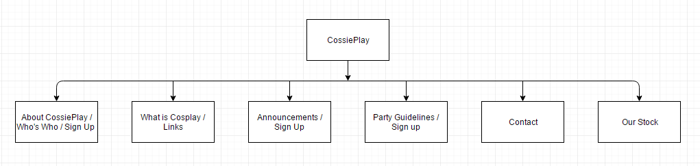

CP1406 - Assignment 1 - Project Plan - CossiePlay
Name: Sean Abbey
Login: JC319588
Goals
CossiePlay is aiming to improve their business by promoting themselves on the internet.
They aim to increase participation in their monthly cosplay parties and increase their weekly costume sales.
They also want to appeal to a younger audience (High school kids and young adults)
and increase general awareness of their business.
Success Evaluation
- Are more people coming to the monthly cosplay party? - We can evaluate this by keeping track of how many customers attend before the sites launch, and after. We should check this in intervals of say 2 months at a time and see how the attendance numbers scale.
- Are they selling more costumes per week? - This can be evaluated by keeping weekly sales records of before the sites launch and after. Then simply comparing how many sales they are making each week after the websites launch.
- Are younger people coming in? - This can be evaluated by recording peoples age on entry, then comparing the flow of youth coming in after the launch of the site compared to before. This is also efficient as the business could hand 18 plus bracelets out to make the bars functionality easier.
- Ask how people heard about the business. - Ask customers to fill out a survey, or casually bring up the question in conversation.
Target Audience
- 15-50 years old, to incorporate their desired new audience.
- In order to appeal to these age groupes, make the site easy to navigate, and simple to understand.
Site Flowchart (Structure Diagram)

GitHub Repository
https://github.com/seanabbey/webdesignassignment1